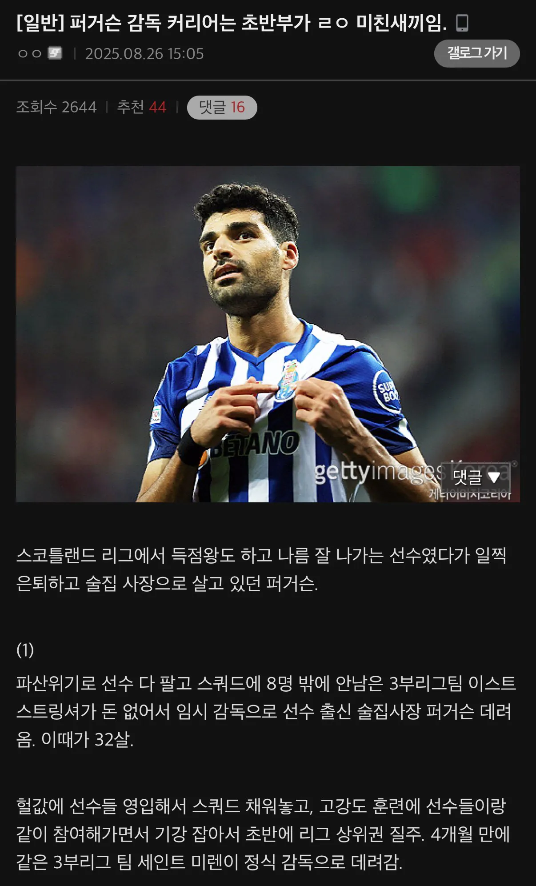
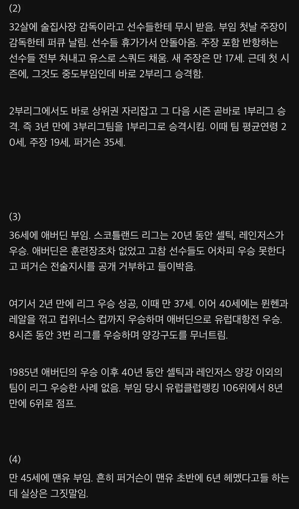
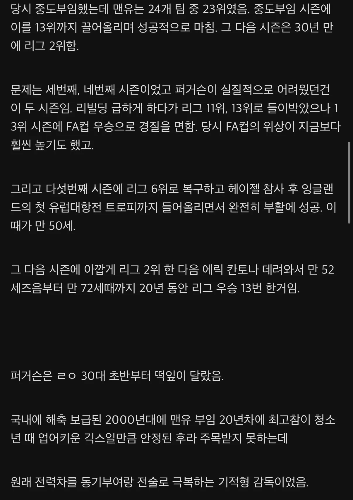

내가 왕년에 뭐좀햇어 하는사람들이 다 저런분이 라는거지?
진짜천재는 애매하지 않다
거의 웹소설급인데??
젊었을때 최면어플 가지고 다닌 급인데
퍼거슨옹 메시한테 털릴때 손 부들부들하던거 기억나네 ㅋㅋㅋㅋㅋ
자연재해 발생
지성팍만 투입했더라면
베컴 좆두도 설설 기는 감독
베컴은 안 기어서 쫒겨났었나
그리고 경마에 미친 할배가 되었다.
축구가 감독 놀음이 아닌가 의심들때 마다 퍼거슨 커리어 보면됨
근본없는 빡빡이새끼가 기름판돈으로 비벼본다고 비벼질분이 아님 ㅇㅇ
ㄹㅇ 축신이네
ㄷㄷㄷ 개쩌네 ㄷㄷ
진짜 혼자 현실 FM하고 있네;;